The editor allows you to create your own complicated rhythm. The simplest rhythm is a loop that repeats one bar a given number of times. As you complicate it, you can add bars and other loops. In the image below you can see the selected empty loop.
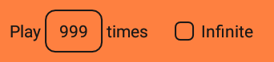
An unselected empty loop looks like this:
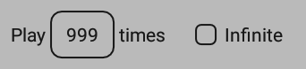
To add a bar to the selected loop, click the "Bar" button.
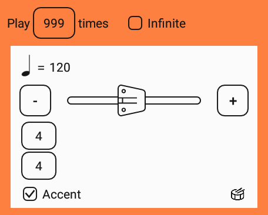
To add another loop to the selected one, click the "Loop" button.
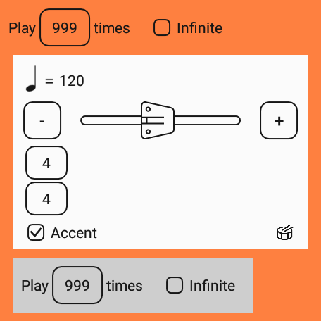
The maximum level of nesting loops is 8, where 0 is the level of the root loop:
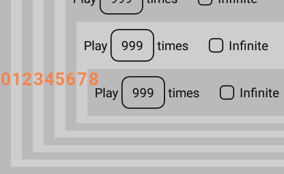
Combine the bars and loops to achieve the desired rhythm.
New Rhythm |
|
| This button begins a new rhythm. | |
Open Rhythm |
|
| This button loads the rhythm from the file. | |
Save Rhythm |
|
| This button saves the rhythm in the file. | |
Save Rhythm As… |
|
| This button saves the rhythm in the file and always prompts you to enter the file name. | |
Settings |
|
| This button displays a dialog box with editor settings. They allow you to set the type of sound when playing a rhythm from editor. | |
| 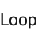 |
Loop |
| The "Loop" button adds a new loop to the selected one. | |
| 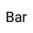 |
Bar |
| The "Bar" button adds a new bar to the selected loop. | |
| 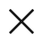 |
Delete |
| This button deletes the selected bar or loop. | |
| 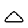 |
Move Up |
| This button moves the selected bar or loop up within the parent loop. | |
| 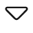 |
Move Down |
| This button moves the selected bar or loop down within the parent loop. | |
Play |
|
| This button starts playing the current rhythm. The first will sound the selected bar or the first bar of the selected loop. If nothing is selected, the rhythm will sound from the beginning. During playback, the button turns into a "Stop" button. | |
| 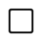 |
Stop |
| This button stops playing the current rhythm and turns back to the "Play" button. | |
Tap Tempo |
|
| This button brings up a dialog box that can measure the frequency of your touches and set it as a tempo. |